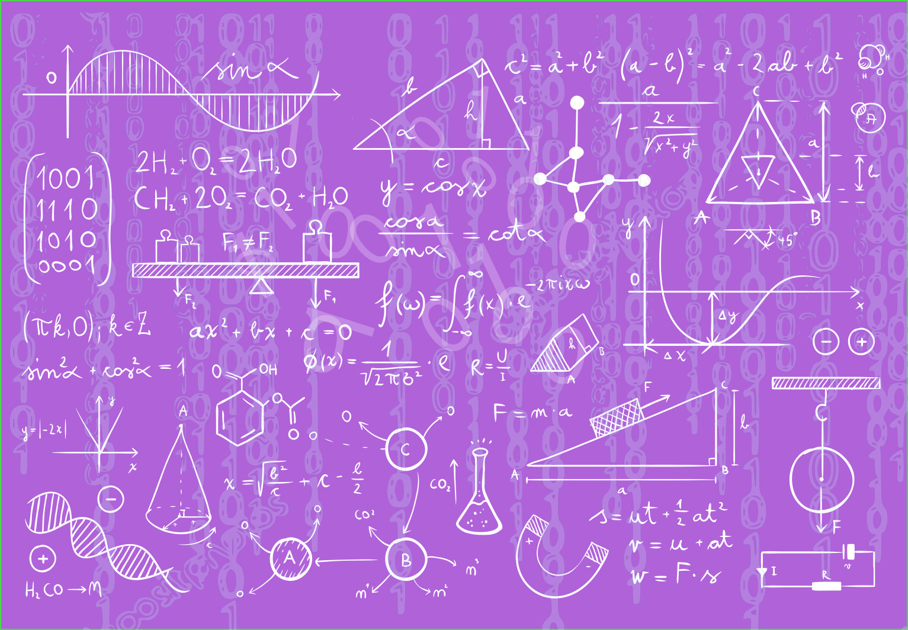

The negotiator should work out his best alternative to a negotiated agreement before the start of any negotiation. This will help negotiators prepare for better outcomes with most preferred outcome being win-win outcome. A win-win situation is an approach where both parties win which is the ideal outcome for almost all negotiations. According to Forsyth (2009), the negotiating process involves balancing matters between two parties so that the negotiator not only gets what he wants but also gets what he wants in the best possible way
By doing proper preparation and planning before negotiations, negotiators increase their value. Planning is bringing the future into the present so that you can do something about it now. Negotiation becomes a process undertaken in everyday activities to manage relationships. According to Ghauri and Usunier, (2003) in some personal negotiation, stakes are not that high and there is no need to pre-plan process and the outcome but in cases like business relationships, the stakes are high and there is need to prepare, plan and negotiate more carefully . The negotiators need to decide what it is they want to achieve and why the other party should negotiate with them. This is further supported by Etherington (2008), negotiators should also think why they should negotiate with the other party. Organizations need to understand that they must spend time planning.
